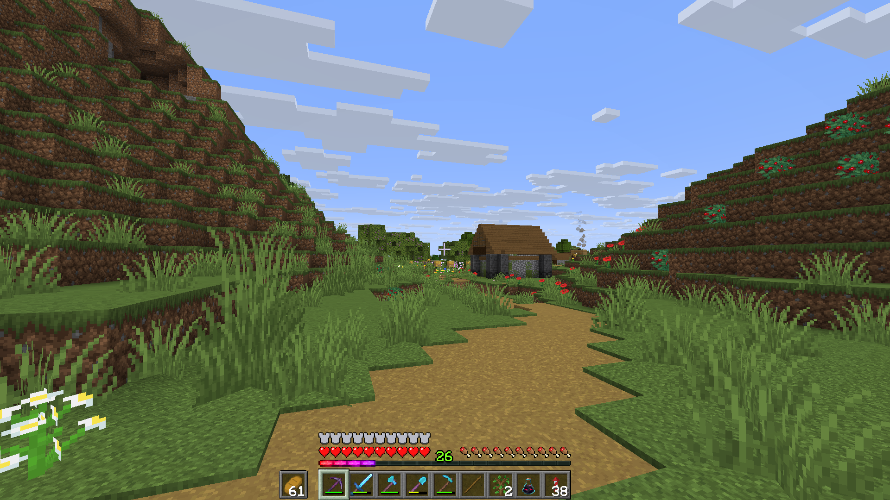
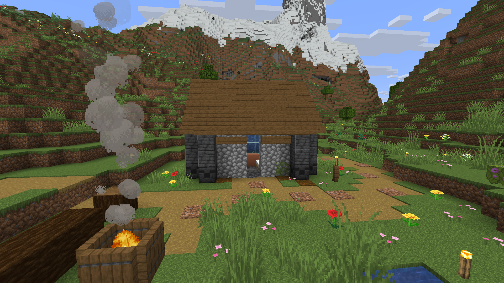
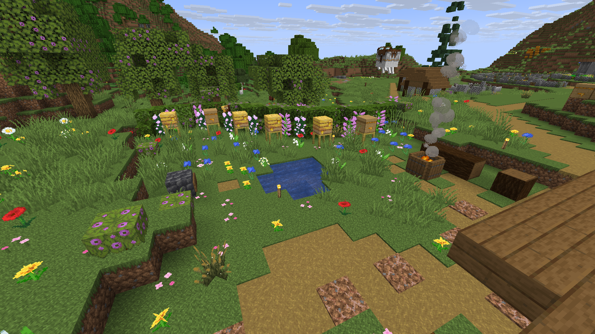
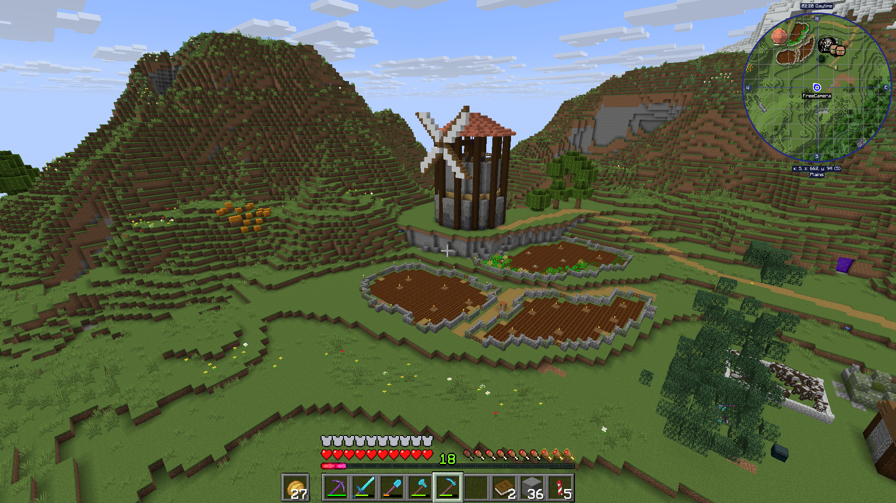

Started: 15th July 2025
Started building another area for my villagers to live in as a home away from home. I will move the villagers from their current mud hut to here.

The first building in the village was a lovely little bee house. This wasn't built for living in as I filled the house with a fish tank.





The building of the village and the progress of different parts of it all coming together. There is a lack of photos of this area being built. Here are some photos of the village being completed.